Hypercommerce Installation & Setup Guide
Everything you need to deploy your multi-vendor ecommerce platform — from server provisioning and the Laravel backend to the mobile apps, Firebase and Google Cloud.
What you'll set up
Hypercommerce ships as four products that share a single backend. Start with the backend, then connect each client app.
Backend, Admin & Seller Panel
The Laravel core that powers your store, admin dashboard and seller portal.
Customer App
The Flutter buyer app for Android & iOS, with push, maps and payments.
Seller App
The Flutter seller app for managing orders, products, inventory and store operations on the go.
Customer Web
Browser storefront sharing the same backend API. Runs server-rendered on a VPS, or as a static build on ordinary shared hosting.
Recommended order
Follow the guide top to bottom. Each section assumes the previous one is complete.
Before you begin
Make sure you have the following ready. Detailed specs live on the Server Requirements page.
License certificate & purchase code.Server Requirements
Hypercommerce runs on any standard LAMP/LEMP stack. Confirm your server meets the specs below before installing the backend.
Minimum requirements
| Component | Minimum | Recommended | Required |
|---|---|---|---|
| PHP | 8.4 | 8.4+ | Yes |
| MySQL / MariaDB | MySQL 8.0 / MariaDB 10.6 | MySQL 8.0 | Yes |
| Composer | 2.2 | 2.7+ | Yes |
| Web server | Apache 2.4 / Nginx 1.20 | Nginx 1.24 | Yes |
| RAM | 1 GB | 2 GB+ | Yes |
PHP extensions
The following PHP extensions must be enabled. Most are bundled with standard PHP installs.
GD or Imagick. Imagick produces sharper thumbnails and is preferred when available.Recommended hosting
Hypercommerce works on shared hosting, but a VPS or cloud server is strongly recommended for queues, cron and media storage.
The recommended setup. Full control over PHP, Nginx, Redis and cron — required for background jobs and push notifications.
- Ubuntu 22.04 LTS or 24.04 LTS, 2 vCPU, 2–4 GB RAM, 40 GB SSD
- Nginx + PHP-FPM 8.4 + MySQL 8.0
- Redis for queue driver (phpredis extension)
- Supervisor to keep queue workers alive
Supported for smaller stores. Ensure your panel exposes PHP 8.4 version selection, a MySQL database and cron jobs. Note that Redis (for queues) and persistent queue workers are typically unavailable on shared hosting.
- PHP 8.4 must be selectable — most shared hosts don't offer it yet, verify before purchasing
- Queue connection falls back to
databasedriver (less performant than Redis) - Use
queue:listenvia cron as a workaround for background jobs - Spatie Media Library requires writable
storage/and sufficient disk space
Platforms like Laravel Forge, Ploi or RunCloud provision the full stack automatically and are an easy path to production.
Verify your environment
On shared hosting, check these values visually before uploading: use Select PHP Version, PHP Configuration or PHP Info for the PHP version and extensions, and use MySQL Databases for the database version and connection details. The web installer's Requirements page performs the final browser-based check.
# Confirm PHP version (must be 8.4+)php -v # List enabled PHP extensionsphp -m # Confirm Composer is installedcomposer --version # Confirm database connectivitymysql --versionBackend Installation
Install the Laravel core that powers your admin dashboard, seller panel and the API behind every Hypercommerce app.
.env editing or Artisan commands. Just upload, point it at a database, and finish setup in your browser.Using shared hosting? Follow a hosting-specific walkthrough:
Overview
At a high level, you upload the files and point your domain at the /public folder — then the built-in web installer handles everything else in the browser: licensing, requirement and permission checks, your database connection, creating a clean database, and creating your admin account. Here's the full path:
- Upload & extract the package, then point the domain at
/public - Create an empty MySQL database and user (you'll enter these in the installer)
- Open
/installand complete the guided wizard - After install, schedule cron & the queue worker
Step-by-step installation
Upload & extract files
Choose whichever extraction method is available to you, then point your domain or subdomain at the extracted project's /public directory.
hypercommerce.zip, select or right-click it, choose Extract, and select the website directory.cd /var/wwwunzip hypercommerce.zip -d hypercommercevendor folder, so you don't need to run Composer. Only if you're installing from a fresh-source package should you run composer install --no-dev --optimize-autoloader./public folder — never the project root. On Apache the bundled .htaccess handles this; on Nginx set root /var/www/hypercommerce/public;.Create the database
Create an empty MySQL database and a database user with full privileges. Keep the database name, username, password and host ready for the installer.
CREATE DATABASE hypercommerce CHARACTER SET utf8mb4 COLLATE utf8mb4_unicode_ci;CREATE USER 'hc_user'@'localhost' IDENTIFIED BY 'a-strong-password';GRANT ALL PRIVILEGES ON hypercommerce.* TO 'hc_user'@'localhost';FLUSH PRIVILEGES;Run the installer
Install entirely from your browser — no terminal or manual configuration required. Open https://your-domain.com/install and the wizard guides you through each step in order:
- Welcome — confirm you're ready to begin.
- License — enter your Envato purchase code. It's verified online and your domain is registered automatically.
- Requirements — the installer checks your PHP version and required extensions.
- Permissions — it confirms
storageandbootstrap/cacheare writable. - Environment & Database — enter your database hostname, username, password and database name. The installer tests the connection and writes your
.envfor you. It temporarily uses cookie sessions so setup remains available even when the uploaded environment selected another session driver. - Admin account — set your super-admin name, email, password and mobile.
- Install database — confirm the warning, then keep the page open while the live progress screen removes existing tables and views, runs every migration and required seeder, and creates the Super Admin.
- Final verification — the installer verifies the Admin, creates the storage link, switches sessions to the database driver and marks the installation complete. If this check is interrupted, use Retry Final Verification.
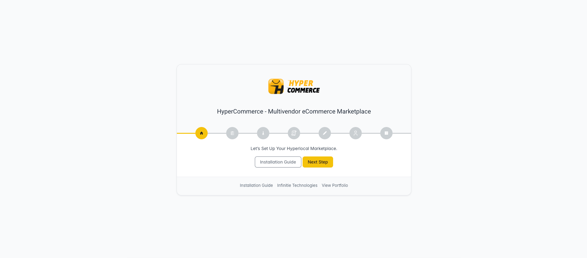
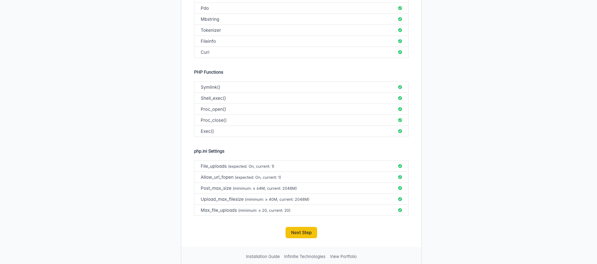
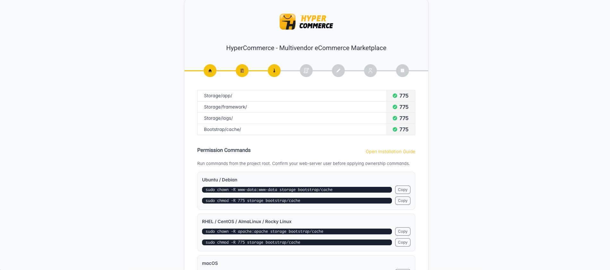
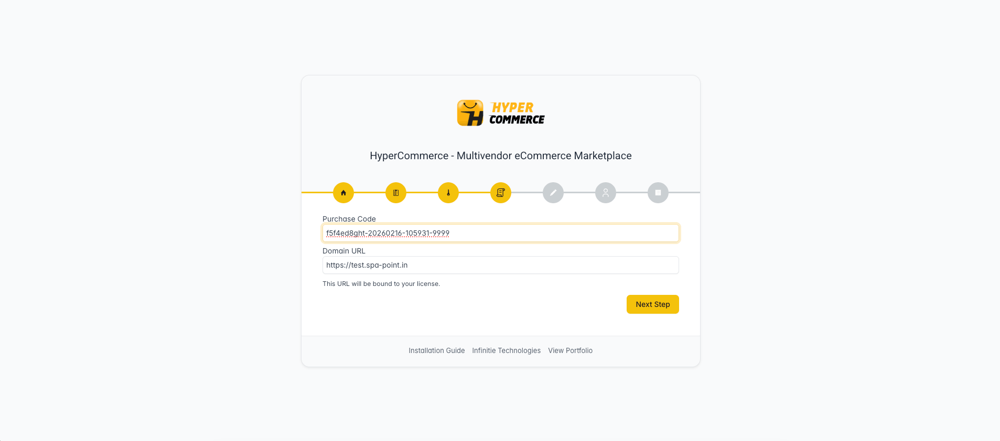
storage and bootstrap/cache must be writable (775).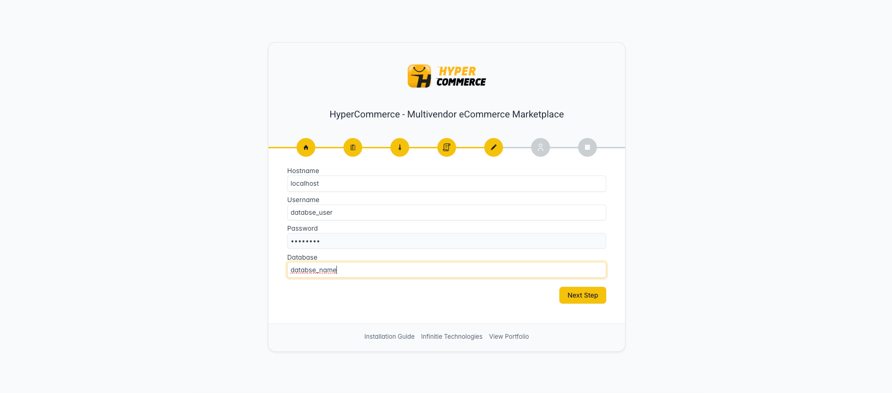
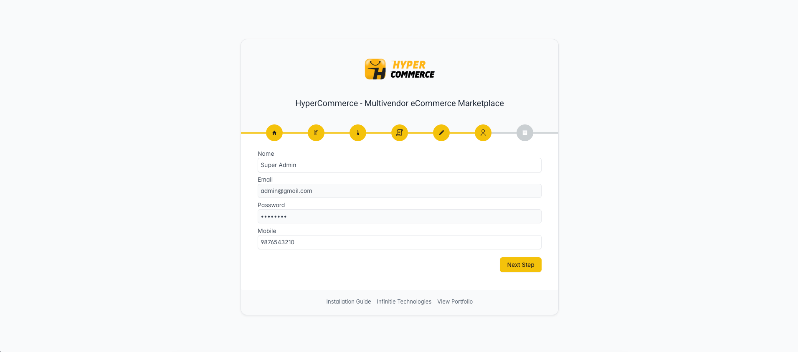
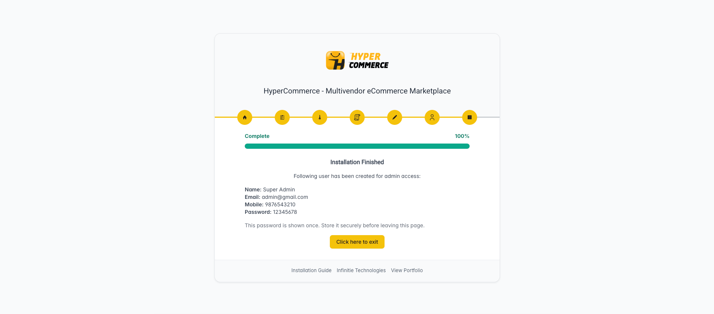
Set file permissions
The installer's Permissions step checks this for you. On shared hosting, open File Manager, select storage and bootstrap/cache, choose Permissions or Change Permissions, and set directories to 775. Apply the change recursively to their folders and files when your panel provides that option, then return to the installer and re-check.
www-data with the actual web-server user when your server uses a different account.# Give the web server ownershipsudo chown -R www-data:www-data storage bootstrap/cache # Apply write permissionssudo chmod -R 775 storage bootstrap/cacheSchedule cron & queue
Hypercommerce uses Laravel's task scheduler and a queue worker to process orders, payouts, notifications and currency-rate refreshes. The admin panel generates the exact commands for you — how you run them depends on your hosting.
schedule:run) and Queue Worker (queue:work) — each with a copy button and a live health indicator. It fills in your server's real PHP binary and project path for you.Shared hosting (cPanel, hPanel, etc.) — copy both commands from Cron Monitor and add each as a cron job set to run every minute. The leading * * * * * is what makes a job run once a minute, every minute:
# Task scheduler — runs every minute* * * * * /usr/bin/php /home/youruser/your-site/artisan schedule:run >> /home/youruser/your-site/storage/logs/schedule.txt 2>&1 # Queue worker — runs every minute* * * * * /usr/bin/php /home/youruser/your-site/artisan queue:work --stop-when-empty >> /home/youruser/your-site/storage/logs/cron-log.txt 2>&1VPS or dedicated server — if you have shell access and can run long-lived processes, you don't need a per-minute cron at all. Run the scheduler and queue worker as persistent background processes instead, kept alive by Supervisor so they restart on crash or reboot:
# Run the scheduler continuously — replaces the every-minute cronphp artisan schedule:work # Process queued jobs continuouslyphp artisan queue:work --tries=3 --timeout=90Define a Supervisor program for each so they stay running in the background:
[program:hypercommerce-scheduler]command=php /var/www/hypercommerce/artisan schedule:workautostart=trueautorestart=trueuser=www-data [program:hypercommerce-queue]command=php /var/www/hypercommerce/artisan queue:work --tries=3 --timeout=90autostart=trueautorestart=truenumprocs=1user=www-datasudo supervisorctl reread && sudo supervisorctl update && sudo supervisorctl start all. Cron Monitor still shows live health for both tasks regardless of how they run.Post-install checklist
Once the installer finishes, confirm each item below before going live.
System Updates
Open Admin → System Updates and choose the official update ZIP. Hypercommerce uploads and validates the package first; the website has not changed at this point. The ZIP must contain a valid update.json, target a newer supported version, and pass archive, path and disk-space checks.
Upload and check the package
Select the ZIP and wait for validation. Application-only updates continue after a successful check. Updates containing prepared dependencies open a review dialog showing the version, maintenance warning, database warning when applicable and any missing server-extension warnings.
Review and confirm dependency updates
Prepared dependency updates contain matching composer.json, composer.lock and vendor.zip. Hypercommerce installs these files directly and does not run Composer on your server. A missing extension such as Sodium appears as a warning; the prepared dependencies can still be installed, but features requiring that extension may remain unavailable until your host enables it.
Follow progress and save the private log link
The site briefly enters a standalone maintenance page while files, dependencies and any database changes are applied. Follow the progress bar and live log. Open or save the private update-log link because it remains available even when Laravel cannot load.
Verify the result
After a successful health check, Hypercommerce records the new version, reopens the website, and removes that run's temporary files, uploaded ZIP and backups. The history log remains. If an update fails before database changes, the previous files are restored and checked. If database changes may have started, maintenance and recovery backups remain for your hosting provider or support technician.
vendor.zip. Failed runs keep the uploaded ZIP, recovery log and applicable backups. A cleanup warning does not take a successfully updated website offline.Troubleshooting
The most common installation issues and their fixes.
storage/logs, the web-server/PHP log, directory ownership, permissions and disk space. Clear Laravel caches only through an authorised server operator after recording the actual error.DB_* values in .env. On many hosts DB_HOST should be 127.0.0.1 rather than localhost.System Health report attached — it captures PHP version, extensions and folder permissions in one click.Hostinger Admin Panel Setup
Deploy Hypercommerce on Hostinger shared hosting using hPanel, File Manager, and the built-in web installer.
Create Website and Database
- Log in to your Hostinger account.
- Create a new website for the admin panel.
- Navigate to Hosting → Manage → Databases → MySQL Databases and create a new database and user.
- Note down the following credentials — they are required during the installation wizard:
localhostUpload and Extract Admin Panel Files
- Open Hostinger File Manager from hPanel.
- Navigate to the website's root directory — usually
public_html. - Upload the Admin Fresh Code ZIP file provided in the CodeCanyon package.
- Extract the ZIP file directly inside the root directory.
If ZIP Extraction Fails
Some large ZIP files may not extract properly through File Manager. In that case, use SSH:
- In hPanel, go to Advanced → SSH Access and enable SSH access.
- Set an SSH password and copy the SSH connection command provided by Hostinger.
- Open Terminal (macOS / Linux) or Command Prompt / PuTTY (Windows) and connect using the copied command.
- Navigate to the directory containing the uploaded ZIP:
cd /path/to/your/websiteThen extract the archive — replace admin-panel.zip with the actual filename:
unzip admin-panel.zipRun the Web Installer
- Open your website URL in a browser.
- The installation wizard will start automatically.
- Enter the database credentials created in Step 1.
- Complete the installation process by following the on-screen instructions.
- After installation is complete, log in to the admin panel using the credentials you configured.
Installation Complete
Your admin panel is now successfully installed and ready for use.
cPanel Setup
Deploy Hypercommerce on a cPanel server using the MySQL Database Wizard, File Manager, and the built-in web installer.
Create a MySQL database & user
- Log in to your cPanel account.
- Under Databases, open the MySQL® Database Wizard.
- Create a new database, then create a database user with a strong password.
- Add the user to the database and grant it ALL PRIVILEGES.
- Note these credentials — you'll enter them in the installer:
cpuser_dbnamecpuser_dbuserlocalhostUpload and extract the files
- Open File Manager from cPanel.
- Navigate to your domain's root —
public_htmlfor the primary domain, or the addon/subdomain folder. - Upload the Admin code ZIP from your CodeCanyon package.
- Select the archive and choose Extract.
If extraction fails
Large archives may not extract through File Manager. If your plan includes Terminal or SSH access, extract from the command line instead:
cd ~/public_htmlunzip admin-panel.zipPoint the domain at /public
Hypercommerce must be served from its /public folder — never the project root.
- Recommended: in Domains, set the domain or subdomain's Document Root to the extracted
…/publicdirectory. - If your plan can't change the document root, extract into
public_htmland move the contents ofpublic_html/publicup intopublic_html. The bundled.htaccesshandles routing on Apache.
/public only/public, your .env and source files become publicly accessible and the app won't load correctly.Run the web installer
- Open your website URL in a browser — you'll be taken to
/install. - Complete the wizard: license, requirements, permissions, the database credentials from Step 1, and your admin account.
- When it finishes, log in to your admin panel with the credentials you set.
Installation Complete
Your admin panel is installed and ready. Set up the scheduler and queue worker using cPanel's Cron Jobs — the exact commands are shown on the Backend Installation page (Step 5).
Firebase Setup
Hypercommerce manages Firebase entirely from the Admin Panel. Configure authentication and push notifications once, and they apply to the Customer Web and apps automatically — no .env editing required.
Connect your Firebase project
Create a Firebase project, register a Web App, then paste its configuration into the Admin Panel.
Create a Firebase project
Go to the Firebase Console and create a new project — or select an existing one to reuse.
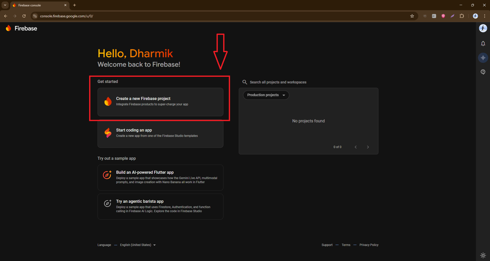
Add a Web App
Inside the project, add a new Web App using the </> icon and give it a nickname.
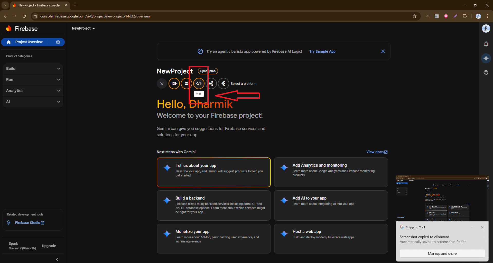
</>) icon to add an app.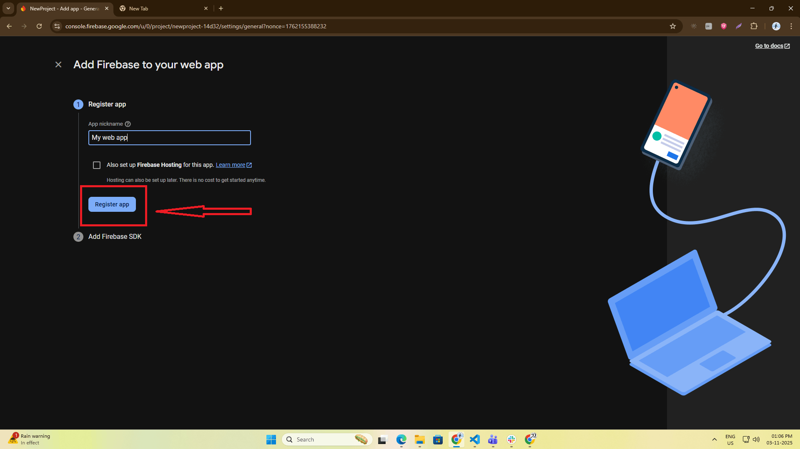
Copy your Firebase config
Open Project settings from the gear menu next to Project Overview.
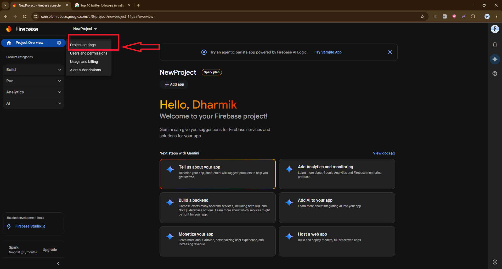
Under your Web App, copy the SDK configuration values — apiKey, authDomain, databaseURL, projectId, storageBucket, messagingSenderId, appId and measurementId.
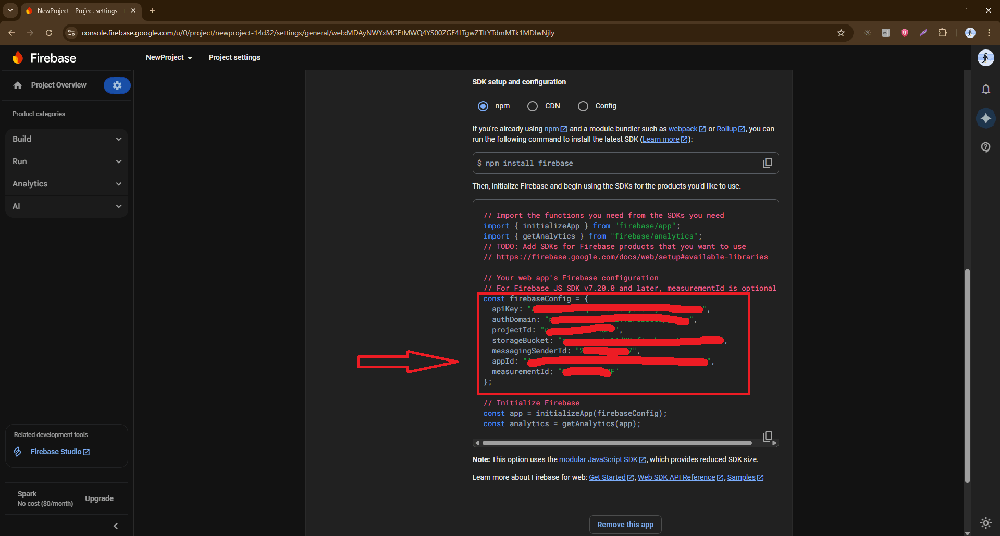
Save it in the Admin Panel
In your Admin Panel, go to Settings → Authentication → Firebase, turn on Enable Firebase, paste each value into its matching field (API Key, Auth Domain, Database URL, Project ID, Storage Bucket, Messaging Sender ID, App ID and Measurement ID), then click Save.
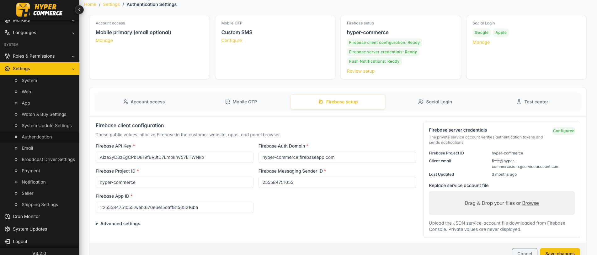
Enable push notifications
Generate the Web Push key and a service account key in Firebase, then add both to the Admin Panel.
Generate a Web Push (VAPID) key
In the Firebase Console go to Project Settings → Cloud Messaging. Under Web Push certificates, click Generate key pair and copy the generated VAPID key.
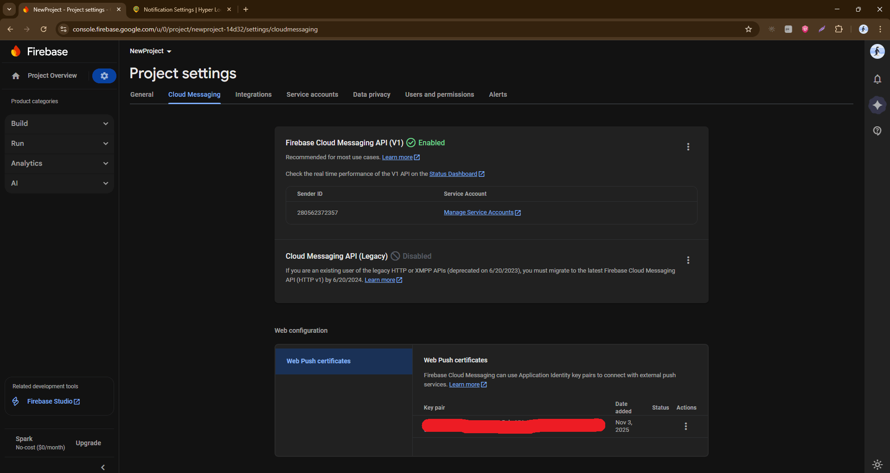
Download the service account key
Go to Project Settings → Service Accounts, click Generate New Private Key, and save the downloaded JSON file securely.
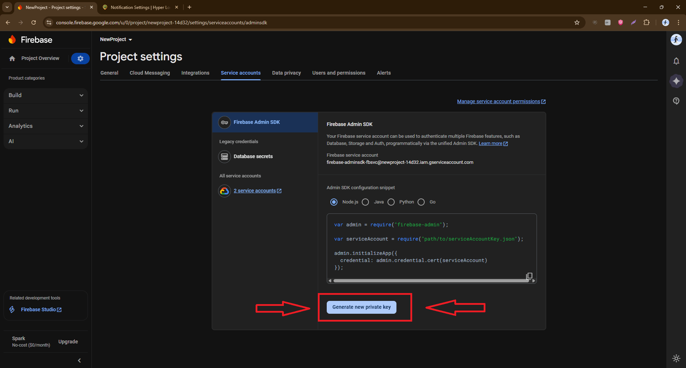
Configure notifications in the Admin Panel
In your Admin Panel, go to Settings → Notifications. Enter the VAPID key, upload the service account JSON file, and Save.
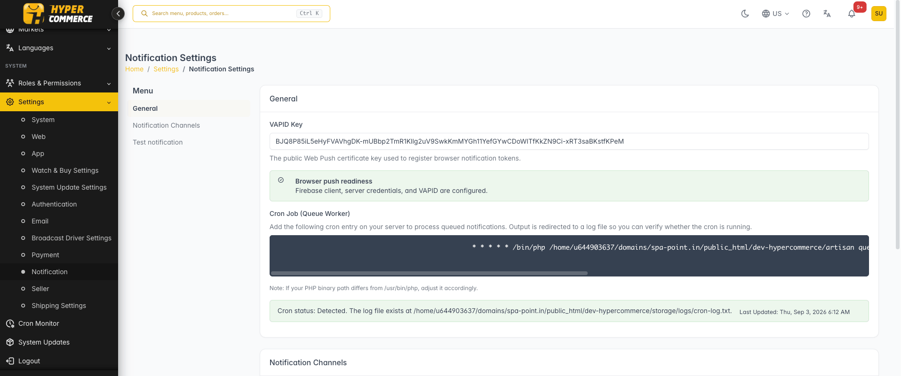
.env editing is required.Final checklist
Google Cloud & Maps
Set up the Google Cloud services that power Maps in the Admin Panel and storefront — a billing account, the required Maps APIs, an API key, and adding that key to the Admin Panel.
Step-by-step setup
Enable a billing account
Google Maps Platform APIs require a valid billing account on your Google Cloud project. Create one and make sure billing is active before continuing.
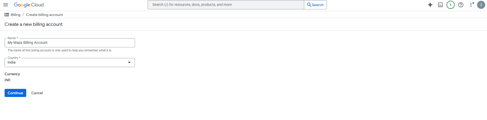
Enable the required APIs
Go to APIs & Services → Library, then search for and enable each one: Places API (New), Geocoding API and Maps JavaScript API.
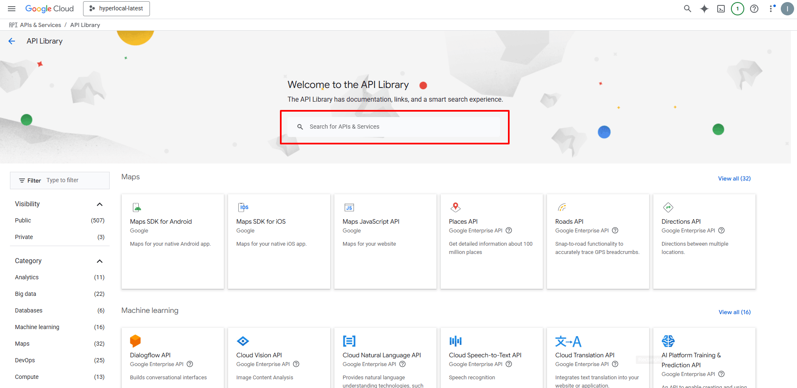
Create & configure an API key
Go to APIs & Services → Credentials, then click Create credentials → API key.
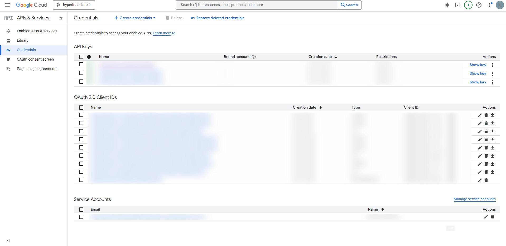
Open the new key to configure it. Check whether it is restricted to specific domains, and that the Maps APIs above are allowed under API restrictions.
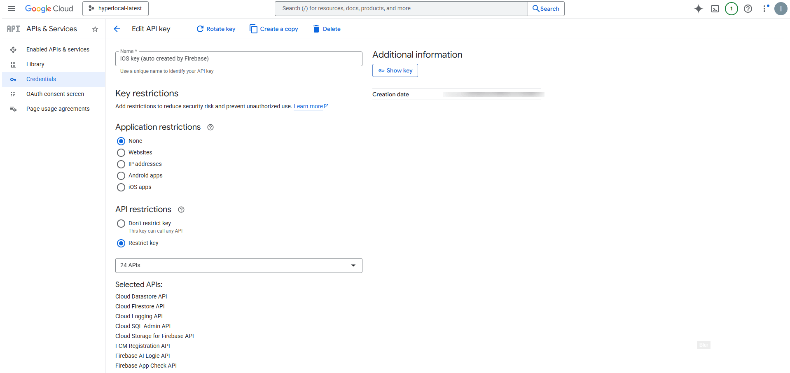
Add the API key to the Admin Panel
Log in to your Admin Panel and go to Settings → Web Settings. Under Support Information, paste your key into the Google Map Key field and click Submit.
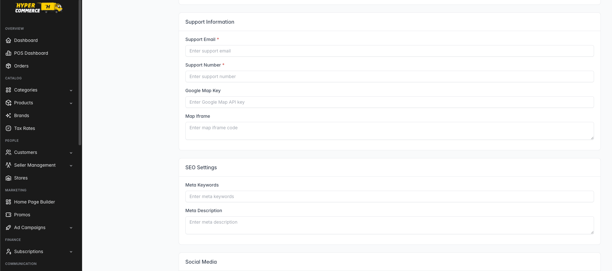
Verify
Check that Google Maps loads correctly in the Admin Panel or Customer Website. If the map doesn't load, confirm the following:
Shipping
Hypercommerce ships orders in two ways — Manual, where the seller uses any courier and types the tracking details in, and Shiprocket, where the platform books the courier automatically. This page explains both, who configures which part, and how a shipping cost is worked out at checkout.
How shipping is calculated
Every shipping cost and delivery estimate in the platform comes out of the same five-link chain. Both methods use it — they differ only in who decides the rate and who moves the parcel.
Store
The seller's store. A seller may run more than one; the panel is scoped to one store at a time.
Locations
The physical places stock ships from. Stock is held per location per variant. One is the default ship-from point.
Shipping Profile
A reusable shipping policy. Products are attached to a profile, and the profile is attached to the locations it ships from. A product belongs to one profile — if none is set, the default profile applies.
Zones
Inside a profile, a zone first selects the covered country or countries. Manual shipping can then use no local restriction, an allowlist, or a blocklist made from exact pincodes, prefixes, ranges, cities or states. Shiprocket ignores those manual rules and checks the courier API by pincode.
Rate
What a zone costs and how long it takes. Rate types: flat, free above an order value, weight_based, price_based, or carrier_quoted (Shiprocket only). The rate also carries the ETA (min–max + unit).
What is Manual shipping?
Manual shipping means the seller is in charge of the courier. The platform never talks to a carrier: the seller sets their own rates, hands the parcel to whichever courier they like, and types the tracking details back into the panel by hand.
What is Shiprocket shipping?
Shiprocket is India's courier aggregator. When the admin connects a Shiprocket account, the platform books couriers on the seller's behalf — the seller never picks a carrier or types a tracking number.
carrier_quoted — the customer sees the real courier price for their pincode.Who configures what
Shipping is split between the two panels. The admin decides which methods exist and holds the carrier account; the seller decides where they ship, for how much, and packs the parcels.
| Responsibility | Admin | Seller |
|---|---|---|
| Enable Manual / Shiprocket | Yes Settings → Shipping | — |
| Shiprocket account & API credentials | Yes one account for the platform | — |
| Webhook secret & cron | Yes | — |
| How customers are charged for Shiprocket | Yes carrier-quoted / flat / free | — |
| Parcel defaults & wallet alert | Yes | — |
| Platform fee & COD fee | Yes per market | — |
| Store locations (ship-from) | — | Yes |
| Shipping profiles, zones, rates, ETAs | — | Yes |
| Packages (parcel presets) | — | Yes |
| Accepting items & creating parcels | On the seller's behalf | Yes |
| Updating a manual parcel's status | On the seller's behalf | Yes |
Admin setup — Settings → Shipping
Everything below lives on one page in the Admin Panel: Settings → Shipping. Configure it before onboarding sellers — a seller cannot pick a method the admin hasn't enabled.
Manual settings
| Field | Default | What it does |
|---|---|---|
| Enable manual shipping | on | Makes manual fulfilment available to every seller. |
| Display title | Standard Shipping | The name sellers and customers see instead of the raw code. Max 60 characters. |
| Dispatch SLA (days) | 0 | How many days after an order a manual parcel must ship. 0 disables the SLA. Range 0–60. |
Shiprocket connection
| Field | Required | What it does |
|---|---|---|
| Enable Shiprocket | Optional | Off by default. Turning it on activates carrier booking, tracking and the two cron jobs. |
| Display title | Optional | Defaults to Easy Ship. Max 60 characters. |
| API user email | Yes | Required once Shiprocket is enabled. Must be a valid email. |
| API password | Yes | The API user's password. Use Test connection to confirm it authenticates before saving. |
| Channel ID | Optional | Tags bookings to a specific Shiprocket channel. Leave blank unless Shiprocket told you otherwise. |
| Webhook secret | Yes | The shared secret that proves an incoming tracking update really came from Shiprocket. See below. |
Webhook & cron
Tracking reaches the platform two ways — a live webhook from Shiprocket, and a scheduled poll as a fallback. Set up both.
# Webhook URL — replace with your own domainhttps://your-domain.com/api/webhooks/shippingrocket# Send the same secret you saved in Settings → Shipping as the headerx-api-key: <your webhook secret>The scheduler must already be running from the Installation step. Two jobs register themselves automatically and only run while Shiprocket is enabled:
Rates & parcel defaults
The rate mode decides what a customer is charged for a Shiprocket shipment, regardless of what the courier bills you.
| Rate mode | Customer pays | When to use it |
|---|---|---|
carrier_calculated Default | The live courier quote for their pincode. | Pass the real cost through. Most accurate, varies per order. |
flat | A fixed amount you set. | Predictable pricing. The flat rate is required when this mode is selected. |
free | Nothing. | You absorb shipping. Combine with free above to make it conditional on order value. |
Free above sets an order subtotal at or over which shipping becomes free; 0 disables it. Parcel defaults are the weight and dimensions used when a product carries none — they stop a booking failing on missing data.
0 disables the alert.0 means unlimited. Each product also has Allow COD; one product with it off removes COD from the cart. See Admin Guide → Markets & Currencies.Seller setup — profiles, zones & packages
Once the admin has enabled a method, each seller configures their own shipping in the Seller Panel under Shipping.
Add store locations
Under Locations. Each location holds stock and is a ship-from point; one is the default. With Shiprocket enabled, every location is also registered as a Shiprocket pickup point and shows "Shiprocket ready" once accepted — after which its address is locked, because Shiprocket won't allow edits to a registered pickup point.
Create a shipping profile
Name it, choose the products it covers and the locations it ships from.
Add zones and rates
Select the country/countries and set the zone's cost rule and ETA. For manual shipping, optionally add allowlist/blocklist serviceability rules for postcode, prefix/range, city or state. With Shiprocket, use carrier-quoted and let the courier API decide pincode serviceability.
Save packages (optional)
Under Shipping → Packages, save the box sizes used most often — type (Box / Envelope / Soft pack), outer dimensions and the packaging's empty weight. One package per store is the default and pre-fills the parcel form.
length × breadth × height ÷ 5000). A big, light box is billed by its size. The package form shows both live, so an expensive parcel is visible before booking.Order to delivery
Both methods share the first two steps and diverge at the parcel.
| Stage | Manual | Shiprocket |
|---|---|---|
| Order arrives | Online orders only become visible and actionable to the seller once payment is confirmed. COD orders come straight through. | |
| Work each line | There is no acceptance step. The seller fulfils their lines. A permitted seller item action can cancel only that seller's unavailable line; it cannot cancel the whole customer order. Only Admin has the full Cancel order route for partial/full cancellation, restocking, recalculation and refunds. | |
| Create a parcel | Enter courier name, tracking ID and tracking URL. Opens as Label printed, or Confirmed if a tracking number was given. | Pick lines + a package. Opens as Pending, then becomes Confirmed once a courier and AWB are assigned; pickup and documents follow automatically. |
| If booking fails | — | The parcel stays Pending with the reason on the card. Retry booking, Edit items (until an AWB exists), or cancel it — cancel is the only status move out of Pending. |
| Label | Platform label, three sizes, barcode from the tracking ID. | Courier label + manifest + invoice, downloaded from the parcel card. |
| Status | Same chain for both: Label printed → Confirmed → In transit → Out for delivery → Delivered, with Attempted delivery, Failure, Returned and Cancelled as side exits. The seller moves a manual parcel by hand; a Shiprocket parcel is driven by the courier's own updates, re-polled every 30 minutes, plus Sync on demand. | |
| Shiprocket-only states | — | Pending, RTO initiated, RTO delivered, Lost. |
| Failed delivery | Handled off-platform with the courier; the seller moves the status by hand. | At Attempted delivery with an AWB: Reattempt delivery or Return to origin, each requiring a comment for the courier. |
| Fulfilment | Before a live parcel exists, Unfulfilled, In progress and On hold may be selected manually. After a live parcel exists the selector locks: In progress is parcel-derived, Partially fulfilled means some units were delivered, and Fulfilled means every unit was delivered. | |
| Returns | Pickup arranged manually. | Approving a return books the reverse pickup automatically. |
Troubleshooting
| Symptom | Check |
|---|---|
| Test connection fails | You're using the dashboard login instead of an API user, or the API user hasn't been activated in Shiprocket. |
| Parcels stay Pending | Shiprocket wallet is empty, or the destination pincode isn't serviceable. The reason is printed on the parcel card. |
| Status never updates | Webhook secret doesn't match on both sides, the webhook URL is wrong, or cron isn't running. |
| Location never turns "Shiprocket ready" | The daily shiprocket:register-pending job isn't running, or the address was rejected by Shiprocket. |
| Customer can't get shipping to their area | Check the destination country is in the zone. For manual shipping, inspect allowlist/blocklist matches for postcode, prefix/range, city and state. For Shiprocket, inspect the carrier's live pincode-serviceability response. |
| COD is missing at checkout | The cart uses manual shipping, the Shiprocket pincode is not COD-serviceable, a product has Allow COD off, or the total exceeds the market's Maximum COD order amount (0 means no cap). |
| Shipping cost looks wrong | A market FX rate is missing or stale — refresh rates under Markets. |
Go deeper
This page is the setup reference. The two knowledge bases cover the day-to-day work in plain language.
Prerequisites
The Customer App is a feature-rich mobile application built with Flutter, giving your users a seamless shopping experience on iOS and Android.
Overview
The Customer App is the primary interface for users to interact with your platform on mobile. It's built with Flutter to deliver:
- Native performance on both iOS and Android
- A consistent experience across platforms
- Smooth animations and transitions
- Offline capability for basic features
- Real-time order tracking and updates
System requirements
For users
For developers
| Tool | Minimum |
|---|---|
| Flutter | 3.0+ |
| Dart SDK | 2.17+ |
| IDE | Android Studio or VS Code |
Developer & signing accounts
You can build and run the app locally for testing without any paid accounts. To publish to the public stores you'll need the platform developer accounts below — set these up before you reach the Build & Release step.
App Configuration
Point the Customer App at your backend and set its identity. Almost everything lives in one file — lib/config/constant.dart — plus a few native values for the app name, package ID and Maps keys.
Core settings — constant.dart
Open lib/config/constant.dart and replace each placeholder with your own value.
class AppConstant { // Your backend API base URL — must end with a trailing slash static String baseUrl = 'https://your-domain.com/api/'; static String appName = 'Your App Name'; static String packageName = 'com.yourcompany.app'; // Google Maps keys (used for Places & Geocoding REST calls) static String androidMapKey = 'YOUR_ANDROID_MAP_KEY'; static String iosMapKey = 'YOUR_IOS_MAP_KEY'; // Google Sign-In server client ID (OAuth web client) static String serverClientId= 'YOUR_SERVER_CLIENT_ID';}/api/baseUrl'${baseUrl}login', '${baseUrl}categories' and so on (see lib/config/api_routes.dart). A missing trailing slash breaks every request.Android identity
Update these native Android values to match your packageName and branding.
applicationId & namespace (default com.hyperCommerce.customer)android:label → your app namecom.google.android.geo.API_KEY → your Android Maps key<application android:label="Your App Name" …> <!-- Google Maps API Key --> <meta-data android:name="com.google.android.geo.API_KEY" android:value="YOUR_ANDROID_MAP_KEY" />iOS identity
In Xcode (ios/Runner.xcworkspace) and the iOS files:
PRODUCT_BUNDLE_IDENTIFIER in Xcode → Signing & CapabilitiesCFBundleDisplayName & CFBundleName → your app nameGMSServices.provideAPIKey(...) → your iOS Maps keyGMSServices.provideAPIKey("YOUR_IOS_MAP_KEY")Available customizations
Everything you can rebrand, and where each value lives in the project.
| Customization | Where | What to change |
|---|---|---|
| App color | lib/config/theme.dart | primaryColor hex |
| Package / Bundle ID | build.gradle · Xcode | applicationId / bundle identifier |
| App logo & icon | assets/images/app_launcher_logo/ · app_logos/ | Replace PNGs, regenerate icons |
| App name | constant.dart · Manifest · Info.plist | appName / label |
| Base URL | lib/config/constant.dart | baseUrl |
| Firebase (CLI) | flutterfire configure | See Firebase & Push |
| Server client ID | lib/config/constant.dart | serverClientId |
| Android Maps key | constant.dart · Manifest | androidMapKey / geo API_KEY |
| iOS Maps key | constant.dart · AppDelegate.swift | iosMapKey |
App color
The primary brand color is defined once in lib/config/theme.dart. Change the hex and it flows through buttons, the active nav bar, badges and accents.
class AppTheme { // Your brand color — default is amber 0xFFFFB616 static const Color primaryColor = Color(0xFFFFB616); …}App logo & launcher icon
Two sets of images: the in-app logo and the home-screen launcher icon.
- In-app logo — replace
assets/images/app_logos/app-logo-light.pngandapp-logo-dark.png. - Launcher icon — replace
assets/images/app_launcher_logo/launcher_icon.png(used byflutter_launcher_iconsfor both Android and iOS, already configured inpubspec.yaml).
Then regenerate the platform icons:
flutter pub getdart run flutter_launcher_iconslauncher_icon.png at a high resolution (1024×1024). The generator handles the adaptive-icon foreground/background and every density automatically.Regenerate & run
After editing the values above, fetch packages and run the code generator, then launch the app.
# Install dependenciesflutter pub get # Run the code generator (Hive / models)flutter pub run build_runner build --delete-conflicting-outputs # Launch on a connected device or emulatorflutter runFirebase & Push
To use authentication and push notifications in the Customer App you must set up Firebase for both Android and iOS. You can do this automatically with the FlutterFire CLI (recommended) or manually.
Method 1 — FlutterFire CLI Recommended
The fastest, most reliable way — it generates the correct configuration files for every platform automatically.
Install the Firebase CLI
# Install globally using npmnpm install -g firebase-toolsLog in to Firebase
firebase loginfirebase login --no-localhost if the machine has no browser.Install the FlutterFire CLI
# Activate the CLI globallyflutter pub global activate flutterfire_cliflutterfire runs from anywhere — on macOS/Linux that's usually ~/.pub-cache/bin.Configure the project
Run this from the root of the Flutter project — it's interactive:
flutterfire configureAnswer the interactive prompts:
- Project selection — pick your Firebase project from the list.
- Platform selection — toggle
androidandioswith the Spacebar. - Reuse existing firebase.json? — answer
no. - Overwrite
lib/firebase_options.dart? — answer Yes so it's updated with your project credentials.
✔ Firebase configuration file lib/firebase_options.dart generated successfully Platform Firebase App Idandroid 1:123456789012:android:xxxxxxxxxxxxxxxxios 1:123456789012:ios:xxxxxxxxxxxxxxxxMethod 2 — Manual setup
Prefer to place each native file yourself? Follow these steps instead.
Create the Firebase project
Go to the Firebase Console and create or select your project.
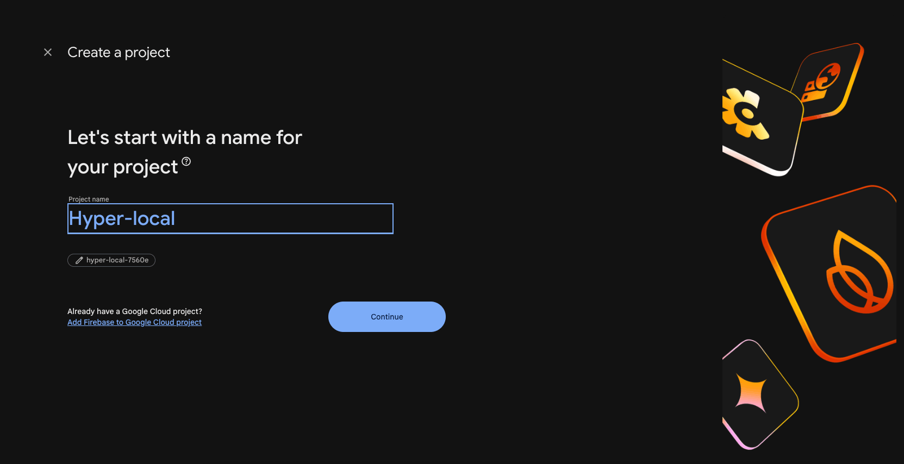
Add the Android app
Click Add app → Android, enter the Android package name (from android/app/src/main/AndroidManifest.xml), then download google-services.json and place it in android/app/.
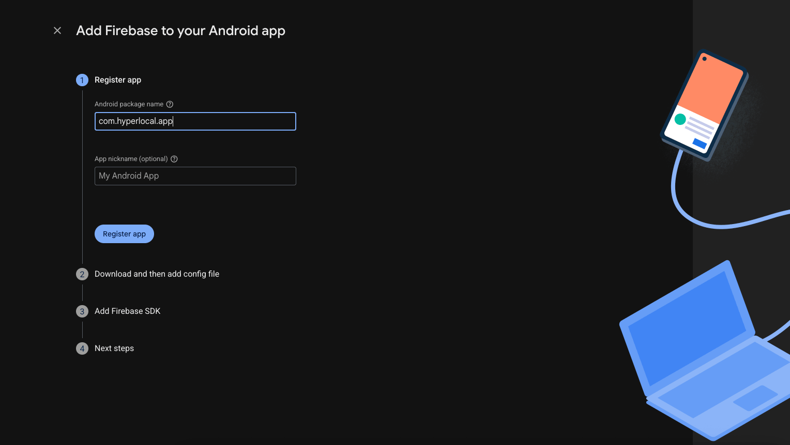
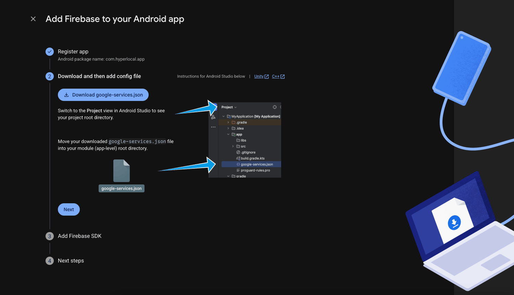
google-services.json.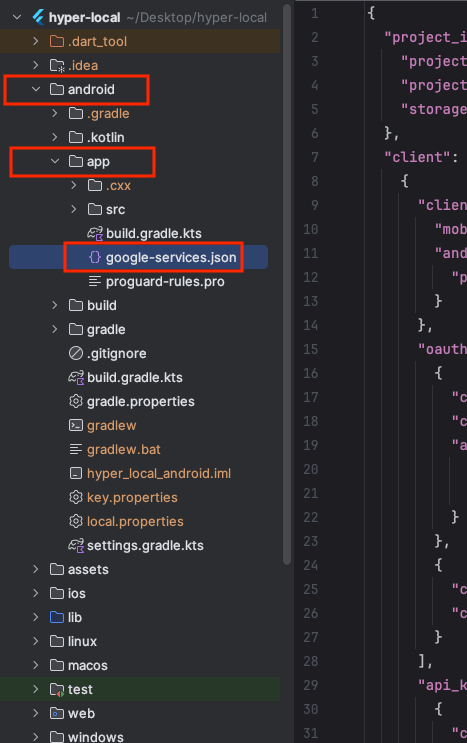
google-services.json placed in android/app/.Release keystore & SHA fingerprints
Google Sign-In and phone auth need your app's SHA fingerprints. In Android Studio, open Build → Generate Signed Bundle / APK, select Android App Bundle, choose Create new beside the keystore field, and save the new .jks file securely. The command below is an optional alternative when you prefer a terminal.
# Check if a keystore already existsls android/app/*.jks android/*.jks 2>/dev/null # Generate a new release keystore (example)keytool -genkeypair -v -keystore android/app/release-key.jks \ -alias upload -keyalg RSA -keysize 2048 -validity 10000To view the fingerprints visually, open Android Studio's Gradle tool window and run android → Tasks → android → signingReport. The optional terminal equivalent is:
cd android./gradlew signingReportCopy the release (and debug, if you sign in on debug builds) SHA-1 and SHA-256 into Project settings → General → your Android app → Add fingerprint.
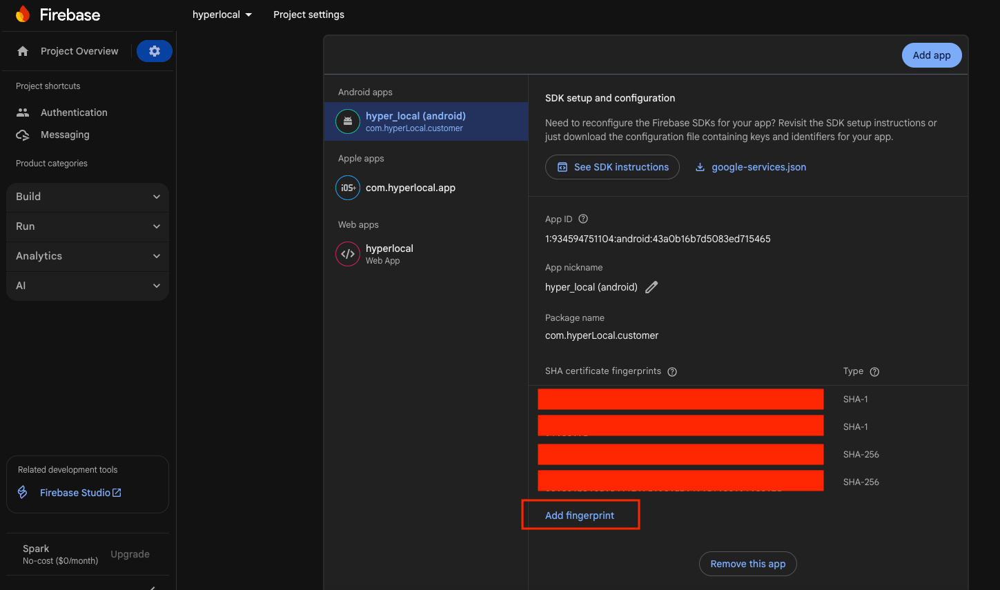
Add the iOS app
Click Add app → iOS, enter the iOS bundle ID (Xcode → Runner → General), download GoogleService-Info.plist and add it to ios/Runner/ in Xcode.
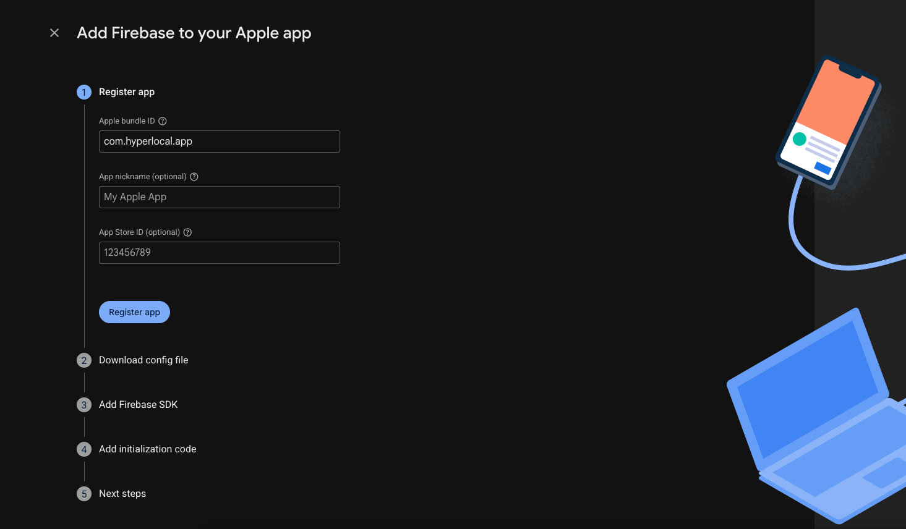
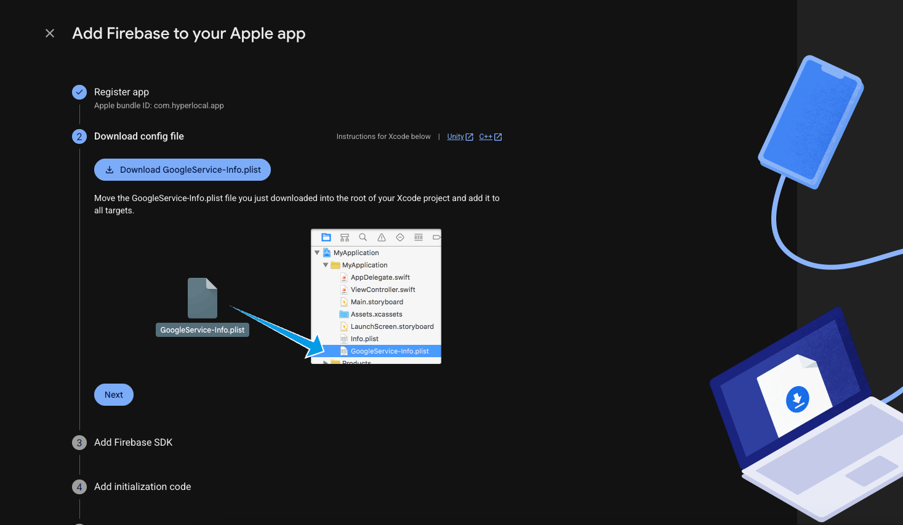
GoogleService-Info.plist.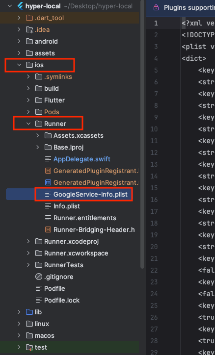
GoogleService-Info.plist placed in ios/Runner/.iOS auth config: open ios/Runner/GoogleService-Info.plist, copy REVERSED_CLIENT_ID, then in Xcode update ios/Runner/Info.plist → CFBundleURLSchemes to match it.
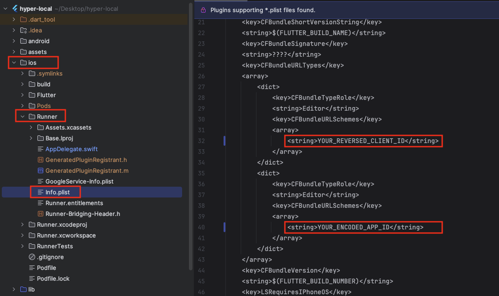
CFBundleURLSchemes to your REVERSED_CLIENT_ID.Common steps (both methods)
Initialize Firebase in code
Ensure lib/main.dart initializes Firebase before the app runs:
import 'package:firebase_core/firebase_core.dart';import 'firebase_options.dart'; void main() async { WidgetsFlutterBinding.ensureInitialized(); await Firebase.initializeApp( options: DefaultFirebaseOptions.currentPlatform, ); runApp(const MyApp());}Enable authentication providers
In Firebase Console → Authentication → Sign-in method, enable Phone, Google, Email/Password and Apple.
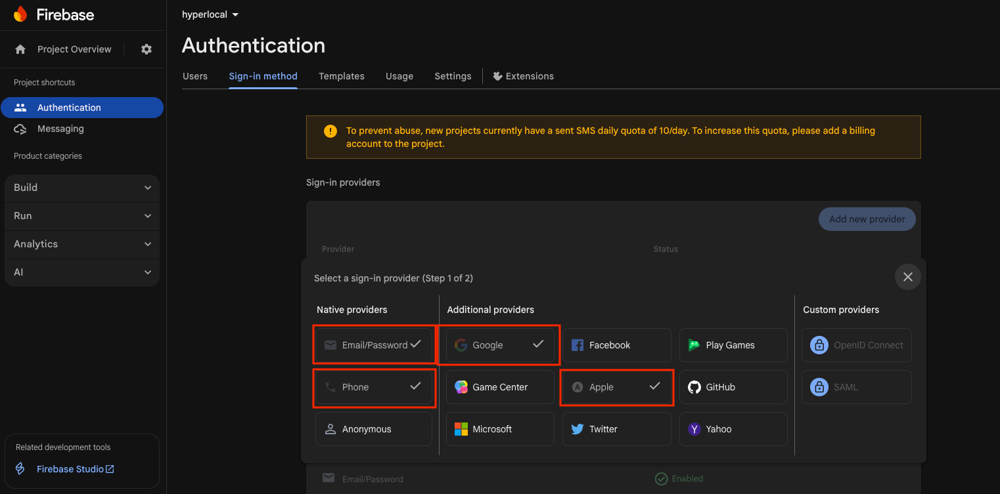
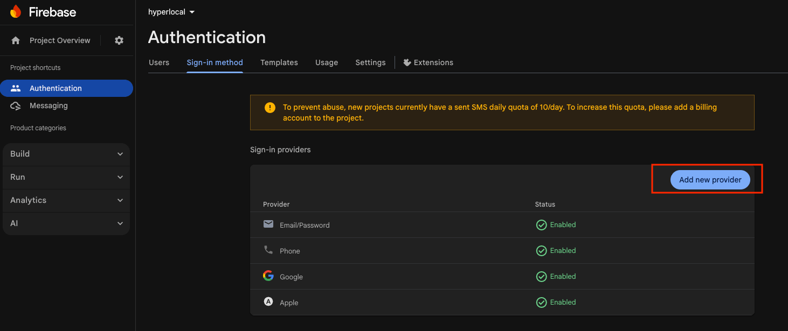
Server client ID (Google Sign-In)
The serverClientId you set in lib/config/constant.dart is the Web OAuth client ID — found as the client_id with client_type: 3 in your google-services.json (or under Google Cloud → Credentials → OAuth 2.0 Web client).
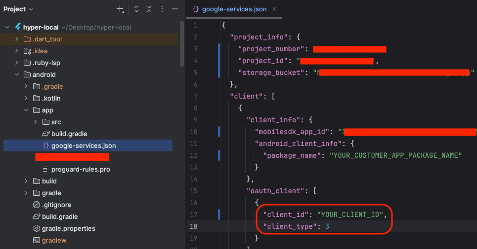
client_id (Web client) used for serverClientId.Final checklist
firebase_options.dart, google-services.json, GoogleService-Info.plist).Build & Release
Produce signed release builds and ship the Customer App to Google Play and the App Store. Make sure you've finished App Configuration and Firebase & Push first.
Set the version
Bump the version in pubspec.yaml before each release. The format is versionName+versionBuild — the build number after + must increase for every store upload.
# versionName + versionBuild (build number)version: 1.0.0+1Android release
Configure release signing
Using the release keystore you generated in Firebase & Push, create android/key.properties. The project's build.gradle already reads it for the release signing config.
storePassword=yourStorePasswordkeyPassword=yourKeyPasswordkeyAlias=upload# path to your .jks, relative to android/app/storeFile=release-key.jks.jks file and its passwords safe and out of source control. If you lose them you can't publish updates under the same app.Build a signed App Bundle
Google Play requires an Android App Bundle (.aab). In Android Studio, choose Build → Generate Signed Bundle / APK → Android App Bundle, select the release keystore and release build, then finish the wizard. The terminal commands below provide the same build when you prefer the command line:
flutter build appbundle --release # output: build/app/outputs/bundle/release/app-release.aab # for a direct-install APK instead:flutter build apk --releaseUpload to Google Play
In the Google Play Console, create your app, upload the .aab to an Internal testing track first, then promote it to Production once verified.
iOS release
Set up signing in Xcode
Open ios/Runner.xcworkspace in Xcode. Under Runner → Signing & Capabilities, select your Team and confirm the Bundle Identifier matches your registered App ID.
Build & archive
flutter build ipa --release # or in Xcode: Product → ArchiveUpload to App Store Connect
Upload the build with the Xcode Organizer (Distribute App) or Transporter, then submit it for review from App Store Connect.
Store listings
Before either store will publish, prepare your listing assets and complete the required forms.
Seller App Configuration
The Seller App uses the same Flutter configuration process as the Customer App. Follow the shared setup guides below using the Seller App project and its own app identity.
Shared configuration guides
Seller App checklist
Prerequisites
The Customer Web storefront installs in one of two ways: a static build you upload to ordinary shared hosting, or a server-rendered install on a VPS. Pick the mode first — it decides everything that follows.
Choose your mode
| Static (shared hosting) | SSR (VPS) | |
|---|---|---|
| Server needs Node.js | No | Yes 22.x LTS |
| What you upload | The out/ folder | The whole project, built and running |
| Web server | Apache with mod_rewrite | Node on port 3002 behind Nginx/Apache |
| Process manager | — | PM2 |
| Server-side rendering | No — pages fill in from the API in the browser | Yes — HTML arrives ready |
| SEO on product/category pages | Weaker: crawlers get the shell first | Full markup on first response |
| Image optimization | Off (unoptimized) | On |
| Typical host | cPanel, Hostinger, Plesk | VPS / cloud server |
What you need
| Component | Minimum | Recommended | Required |
|---|---|---|---|
| Node.js (build machine) | 22.x LTS | 22.x LTS (latest patch) | Yes |
| npm | Ships with Node | Ships with Node | Yes |
| Installed Hypercommerce panel | Reachable over HTTPS | Same server family as the storefront | Yes |
| Domain + SSL | For the storefront itself | Valid certificate, HTTPS forced | Yes |
Apache mod_rewrite | Static mode only | Enabled by the host | Static |
| PM2 | SSR mode only | Latest, with startup script saved | SSR |
robots.txt and the sitemap. If the panel isn't installed and reachable when you build, the storefront still compiles but ships with an empty sitemap and a default manifest. Finish Backend Installation before you start here.Environment variables
Copy .env.example to .env in the project root. There are only four values.
# Your Hypercommerce panel. The API base is this + /apiNEXT_PUBLIC_ADMIN_PANEL_URL=https://panel.your-domain.com# Where this storefront will live — used for SEO, sitemap, canonical tagsNEXT_PUBLIC_SITE_URL=https://your-domain.comNEXT_PUBLIC_APP_VERSION=1.0.0# true = server-rendered (VPS) · false = static build (shared hosting)NEXT_PUBLIC_SSR=trueNEXT_PUBLIC_* value is compiled into the bundle. Changing one — including switching NEXT_PUBLIC_SSR — means rebuilding and re-uploading. Editing .env on the server does nothing on a static install.Languages & PWA
To add a language, drop a new JSON file next to the existing ones and register it in i18n.ts. The shopper's choice is remembered in a cookie.
Seller Landing Page
Build the public /seller-register marketing page in the Admin Panel, localize it for every Customer Website language, and publish section designs, copy and media without changing storefront code.
Access and page rules
Staff need the Seller Landing view permission to open the builder and the edit permission to save changes. The page begins with the supplied Hypercommerce content, images and registration flow, so a new installation has a complete seller page before any customization.
Languages and default content
Use the English, Hindi and Arabic tabs to configure the languages shipped by the Customer Website. The active tab controls which translation you are editing.
Search and social sharing
The first collapsible panel controls the page title, search description and optional keywords for each language. You can also upload a dedicated social sharing image or select Use the hero image.
Sections and designs
| Section | Designs | Editable content |
|---|---|---|
| Hero | Background, Split | Badge, main/accent titles, description, CTA label/link, trust text, desktop image and mobile image. CTA links accept HTTPS, relative paths and page anchors. |
| Benefits | Overlap Grid, Feature Cards | Section title/subtitle and item title, description and image. Overlap Grid keeps the cards over the Hero and gives the heading a readable surface. If only one heading field is filled, that field still displays. |
| Steps | Sticky Story, Timeline | Main/accent titles, subtitle and step label. Use {number} in the label. Each item has title, description, image and Tom Select bullet points. |
| Testimonials | Card Grid, Featured Carousel | Title, subtitle, verified label, seller name, business, quote, avatar and decimal rating from 1 to 5. The storefront shows five rating points and the numeric value. |
| Registration Form | Stepped | The existing required seller registration fields and validation. |
For a Steps bullet point, type the text and press Enter so Tom Select turns it into a tag. Repeat for additional points. Removing a tag removes that point on save. Steps use the item image rather than exposing an internal icon-name field.
Images and static defaults
Every image control uses FilePond and accepts JPG, JPEG, PNG or WebP up to 5 MB. Uploading a file and selecting the displayed source are independent.
Upload the custom image
Select or drop the image into FilePond. This stores the custom media but does not silently change the default switch.
Choose the displayed source
Leave Use static default on for the supplied Hypercommerce image, or turn it off for the uploaded image.
Keep or remove the upload
Turning the default on keeps the custom file for later. To delete the custom file itself, use FilePond's remove action and save. The supplied fallback remains available.
Save and verify
/seller-register on desktop and mobile in English, Hindi and Arabic. Test the CTA and complete the Registration Form.Data and API contract
Seller Landing data is stored in dedicated normalized landing-page, translation, section, item and media-slot tables—not in general Settings. Stable section and item keys plus sort order preserve the page structure. Every media slot keeps its uploaded Media Library file and use_default choice independently.
GET /api/seller-landingThe public response intentionally omits Admin-only mediaDefaults and seoMediaSettings. The API resolves each media slot to the image the Customer Website should display.
Troubleshooting
| Symptom | What to check |
|---|---|
| Uploaded image is not displayed | Turn off Use static default for that image and save. The upload and source switch are intentionally independent. |
| Custom upload returns after selecting default | This is expected: selecting default keeps the upload. Remove it in FilePond and save when the file itself must be deleted. |
| Title, subtitle or label did not change | Check the active language, section visibility and successful save, then refresh the Customer Website. |
| Benefits heading missing in Overlap Grid | Fill either the section title or subtitle. The current overlap design displays the available heading on its own readable surface. |
| Rating is rejected | Use a value between 1 and 5. Decimal values such as 4.5 are valid; anything above 5 is invalid. |
| Bullet point is missing | Press Enter after typing the point so it becomes a Tom Select tag before saving. |
| Loading never finishes or old data remains | Confirm the storefront can reach the panel over HTTPS, verify its configured panel URL, reload without browser cache, and inspect the panel's /api/seller-landing response. |
Shared Hosting (Static)
Build the storefront into a folder of plain HTML, CSS and JavaScript, then upload it to any cPanel, Hostinger or Plesk account. No Node.js on the server, no process manager, nothing to keep running.
.htaccess file, which Apache reads and Nginx ignores. Practically every shared host is Apache, so this is fine — but if your host runs Nginx, ask them to add the equivalent try_files fallback, or use the VPS install instead.Step-by-step
Set the mode to static
In your .env, the one line that matters here:
NEXT_PUBLIC_SSR=falseNEXT_PUBLIC_ADMIN_PANEL_URL=https://panel.your-domain.comNEXT_PUBLIC_SITE_URL=https://your-domain.comNEXT_PUBLIC_APP_VERSION=1.0.0Set NEXT_PUBLIC_SITE_URL to the final public address now — it is written into the sitemap, robots.txt and canonical tags during the build.
Install and build
On your own computer, in the project folder. You need Node 22.x LTS here — check with node -v first. Nothing is installed on the hosting account.
npm installnpm run buildThe build lints, generates the PWA manifest, robots.txt and the sitemap from your panel, then compiles the site into a new out/ folder.
Generate the .htaccess
Static hosting doesn't know how to route /products/blue-shirt to the right file. This writes the rules that do:
node create-htaccess.jsIt creates out/.htaccess, mapping the slug routes — products, categories, brands, stores, feature sections, delivery zones, order detail and share links — onto their pages, and sending everything else to index.html.
.htaccess the home page works and every deep link returns 404 — including links shoppers open from search results, emails and shared products.Upload to your hosting
Upload the contents of out/ — not the folder itself — into your domain's web root, usually public_html.
out/, upload the zip in cPanel's File Manager, then use Extract. Far quicker than FTP for thousands of small files..htaccess starts with a dot, so most FTP clients and file managers hide it by default. Confirm it actually arrived._next folder before uploading the new one, so stale bundles don't linger.Verify
.htaccess test — reaching it by clicking proves nothing./sitemap.xml and confirm it lists real URLs.Updating later
Repeat steps 2–4: rebuild, regenerate .htaccess, re-upload. Because the whole site is prebuilt, content you change in the panel appears immediately — products, prices, banners and settings are all fetched live in the browser. You only need to rebuild when you change the storefront code or an .env value.
npm run deploy that uploads over FTP. Its credentials are blank fields inside ftp.js, not environment variables — so using it means typing your FTP password into a tracked source file. Prefer the File Manager upload above, and if you do use the script, never commit it with credentials filled in.Troubleshooting
| Symptom | Cause |
|---|---|
| Home page fine, every other URL 404s | .htaccess missing, hidden files not uploaded, or mod_rewrite disabled on the host. |
| Site loads but no products | NEXT_PUBLIC_ADMIN_PANEL_URL wrong, or the panel is blocking the storefront's origin (CORS). |
| Everything shows as an empty shell | Panel unreachable over HTTPS, or a mixed-content block — the storefront is HTTPS and the panel is HTTP. |
| Sitemap empty, manifest generic | The panel was offline during the build. Rebuild with it up. |
| Old version still showing | Stale _next files, browser cache, or the service worker. Delete _next on the server and hard-reload. |
| Login or push notifications fail | Firebase isn't configured in the Admin Panel — the storefront reads it from there, not from .env. |
VPS Install (SSR)
Run the storefront as a Node.js service so pages arrive fully rendered. Choose this when search-engine visibility on product and category pages matters.
Step-by-step
Install Node.js and PM2
Node 22.x LTS is the minimum, and also what we recommend — install the latest 22.x patch release. Older lines (18.x, 20.x) are not supported.
curl -fsSL https://deb.nodesource.com/setup_22.x | sudo -E bash -sudo apt install -y nodejssudo npm install -g pm2# should print v22.xnode -vUpload the project and configure it
Put the project somewhere like /var/www/hypercommerce-web, then create .env:
NEXT_PUBLIC_SSR=trueNEXT_PUBLIC_ADMIN_PANEL_URL=https://panel.your-domain.comNEXT_PUBLIC_SITE_URL=https://your-domain.comNEXT_PUBLIC_APP_VERSION=1.0.0Build and start under PM2
npm installnpm run buildpm2 start npm --name hypercommerce -- startpm2 savepm2 startupThe app listens on port 3002. pm2 save plus pm2 startup bring it back automatically after a reboot.
Point your domain at it
Serve port 3002 on your domain through Nginx:
server { listen 80; server_name your-domain.com; location / { proxy_pass http://127.0.0.1:3002; proxy_http_version 1.1; proxy_set_header Upgrade $http_upgrade; proxy_set_header Connection 'upgrade'; proxy_set_header Host $host; proxy_set_header X-Forwarded-For $proxy_add_x_forwarded_for; proxy_set_header X-Forwarded-Proto $scheme; proxy_cache_bypass $http_upgrade; }}Enable the site, reload Nginx, then add HTTPS with Certbot:
sudo ln -s /etc/nginx/sites-available/hypercommerce-web /etc/nginx/sites-enabled/sudo nginx -t && sudo systemctl reload nginxsudo certbot --nginx -d your-domain.comVerify
pm2 status shows hypercommerce online; pm2 logs is clean.Redeploying
After any code or .env change:
npm installnpm run buildpm2 restart hypercommerceThe project also ships a deploy.sh that does exactly this after a git pull. Edit the path and branch at the top before using it.
Troubleshooting
| Symptom | Cause |
|---|---|
| 502 Bad Gateway | The Node process isn't running or isn't on 3002. Check pm2 status and pm2 logs. |
Build fails on npm run build | Node older than 22.x LTS (check with node -v), or a lint error — the build lints first. |
| Pages render but data is missing | NEXT_PUBLIC_ADMIN_PANEL_URL wrong, or the VPS can't reach the panel (firewall / DNS). |
| Still no server-side HTML | NEXT_PUBLIC_SSR isn't true. It's compiled in — rebuild after changing it. |
| Gone after a reboot | pm2 save and pm2 startup weren't run. |
Customer Support Chat
Configure a secure real-time support inbox for your team and a permanent, guided chat timeline for every customer. Hypercommerce supports self-hosted Laravel Reverb and managed Pusher Channels, with automatic 15-second API polling whenever the private WebSocket subscription is unavailable.
How the system works
SUP-… ticket inside that timeline.Messages and sessions are displayed oldest-to-newest. Older messages load in pages without moving the reader away from their current scroll position. Customer, agent, assignment, status, callback, resolution, and closure entries all remain in the shared history. System entries identify who performed the action; customers see their own actions as by you.
Before configuration
php artisan migrate --force only for an authorised manual/source deployment that does not use System Updates.ws:// endpoint.Dynamic broadcast settings
Open Admin → Settings → Broadcast Driver Settings. The active driver and credentials are encrypted with the platform's setting-secret protection and applied at application boot. For the normal Hypercommerce setup, do not duplicate these values in .env and do not manually install pusher/pusher-php-server; Laravel Reverb is already included and supplies the compatible server dependency.
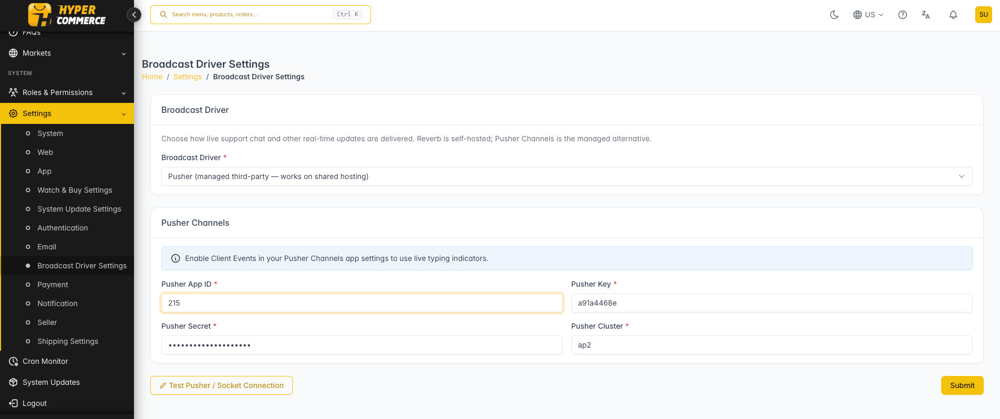
Pusher Channels on shared hosting
Create a Channels application
In Pusher, create a Channels app in the region closest to most of your customers. Record the App ID, Key, Secret, and Cluster.
Enable Client Events
Open the Pusher app's settings and enable Client Events. Hypercommerce also sends an authenticated server-side typing event, but Client Events provide the quickest typing indicator through Echo whispers.
Save in Admin
Select Pusher, enter all four values, and submit the form. The Key is public browser configuration; the Secret is server-only and must never be pasted into Customer Web code.
Test the complete path
Click Test Pusher / Socket Connection. Success means the browser subscribed and received the backend test event; saving valid-looking fields alone does not prove the socket works.
Laravel Reverb on a VPS
Create a DNS record such as ws.your-domain.com pointing to the VPS. Use a TLS certificate for that hostname and proxy it to Reverb's internal port.
| Admin field | Recommended production value | Meaning |
|---|---|---|
| Allowed Origins | admin.your-domain.com, shop.your-domain.com | Every Admin and Customer Web hostname allowed to open a socket. Avoid * in production. |
| WebSocket App ID | hypercommerce-support | A stable identifier shared by Laravel and Reverb. |
| WebSocket Key | A long random public key | Sent to browsers when they connect. |
| WebSocket Secret | A different long random secret | Server-only signing secret. Never expose it in a client or screenshot. |
| WebSocket Host | ws.your-domain.com | Public hostname used by Admin, Customer Web, and Laravel publishing. |
| WebSocket Port / Scheme | 443 / HTTPS / WSS | Public TLS endpoint. |
| Reverb Bind Host | 0.0.0.0 | Interface used by the long-running Reverb process. |
| Reverb Bind Port | 8080 | Internal port reached by the reverse proxy. Do not expose it publicly when a proxy is used. |
Save the settings before starting Reverb. For an initial foreground test, run:
cd /var/www/hypercommercephp artisan reverb:start --debugAfter the browser test succeeds, stop the foreground process and run it under Supervisor. Replace the project path and Linux user with the values used by your server:
[program:hypercommerce-reverb]command=/usr/bin/php /var/www/hypercommerce/artisan reverb:startdirectory=/var/www/hypercommerceuser=www-dataautostart=trueautorestart=trueredirect_stderr=truestdout_logfile=/var/www/hypercommerce/storage/logs/reverb.logstopwaitsecs=3600sudo supervisorctl rereadsudo supervisorctl updatesudo supervisorctl start hypercommerce-reverbsudo supervisorctl status hypercommerce-reverbA minimal Nginx proxy for the dedicated WebSocket hostname is:
server { listen 443 ssl http2; server_name ws.your-domain.com; location / { proxy_http_version 1.1; proxy_set_header Host $http_host; proxy_set_header Scheme $scheme; proxy_set_header SERVER_PORT $server_port; proxy_set_header REMOTE_ADDR $remote_addr; proxy_set_header X-Forwarded-For $proxy_add_x_forwarded_for; proxy_set_header Upgrade $http_upgrade; proxy_set_header Connection "Upgrade"; proxy_pass http://127.0.0.1:8080; }}php artisan reverb:restart. Supervisor should bring the process back automatically. Laravel's official Reverb guide also recommends a process manager and documents connection limits for high-volume installations.Test Reverb without a VPS
Local testing needs no public server. In Broadcast Driver Settings select Reverb and use localhost, 127.0.0.1 as origins, a test App ID/Key/Secret, 127.0.0.1 as WebSocket Host, port 8080, scheme HTTP / WS, bind host 0.0.0.0, and bind port 8080. Save, then run:
php artisan reverb:start --debugKeep that terminal open. Open Admin and Customer Web in separate authenticated browser windows, then use the connection test and send a message in each direction. Local pages must use HTTP when Reverb uses ws://; use local TLS and WSS if the pages are HTTPS.
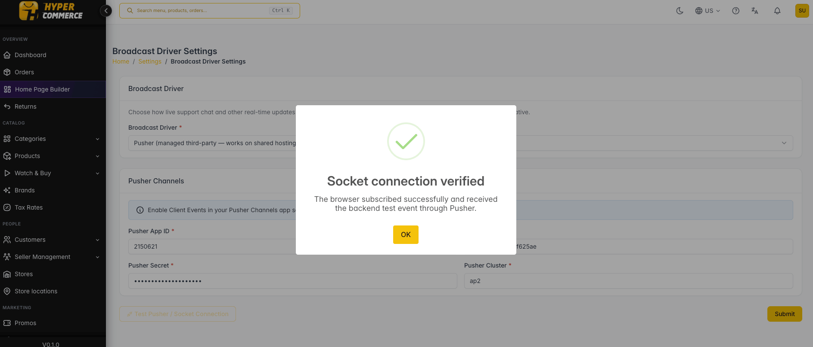
Admin support workflow
Open Customer Support → Inbox
Use Unassigned, Mine, or All. Search customer name, phone, email, order number, ticket number, or message text. Optional filters cover status, topic, callback required, and rating; active filter chips show exactly what is applied.
Assign before replying
Open the conversation and choose Assign to me, or reassign it to another support agent. The composer remains read-only for an unassigned ticket or a ticket assigned to somebody else. This prevents several agents from sending conflicting replies.
Investigate and respond
Use the collapsible customer-details panel for contact data, order items, shipment, return, refund, payment, callback, earlier-session, rating, and deep-link context. Type plain text, press Enter to send, use Shift+Enter for a new line, choose an agent quick reply, or attach up to five JPEG, PNG, WebP, or PDF files of 10 MB each.
Control the session
Set Waiting for customer while awaiting a reply, then return it to In progress. Log callback attempts and private notes. Resolve when the issue is complete, or close it with a reason when an administrative close is required.
Review results
Customer Support → Dashboard shows active, unassigned, resolved, callback, rating, agent, topic, and recent-conversation metrics for 7, 30, or 90 days. A customer's rating is attributed to the assigned or resolving support agent.
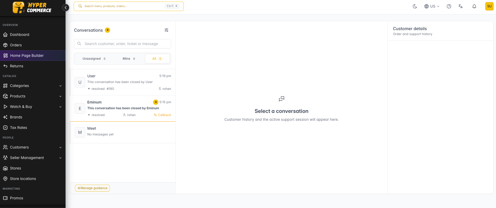
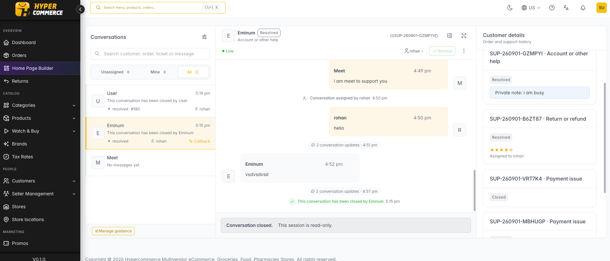
Staff permissions
| Permission | Allows |
|---|---|
support.view | Open the inbox/dashboard, read conversations and protected attachments, search/filter, and mark messages read. |
support.reply | Send messages and typing state after the active session is assigned to that agent. |
support.assign | Assign, unassign, claim, and reassign active sessions. |
support.manage | Change status, log calls, resolve/close, manage guidance and quick replies, delete a message, or clear chat history. |
setting.broadcast_driver.view/edit | View or change Reverb/Pusher settings and run the connection test. |
Guidance topics and quick replies
In the inbox select Manage guidance. Each topic has a title, unique slug, context, guidance, active flag, sort order, customer quick replies, and agent quick replies. Context controls where it appears: Order for an order-specific issue, General without an order, or Both. Guidance appears before the customer starts the session. Keep customer suggestions separate from internal agent responses; each audience accepts up to 12 distinct replies.
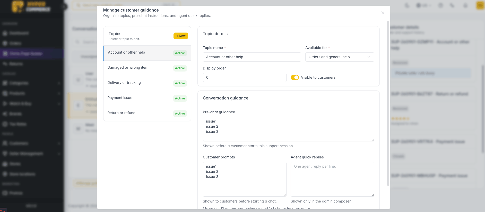
Customer experience
- The customer opens My Account → Support. If an active session exists, it resumes automatically.
- Without an active session, the customer selects a recent order, older order, or general help, then selects a matching guidance topic.
- The selected topic displays safety guidance and customer quick replies. The customer can type up to 4,000 characters and attach up to five supported files.
- The new ticket appears unassigned. The customer sees that a support executive will connect soon. An Admin agent must assign it before replying.
- Messages, typing indicators, callback requests, presence, attachment previews/downloads, and system activity update through the private socket or polling fallback.
- The customer may select Resolve chat and must confirm. Once resolved, the composer is disabled and a closure entry is appended.
- The customer chooses 1–5 stars, may type feedback, then explicitly submits. The rating is attached to the support agent.
- Still have an issue? Chat with us opens the order/topic flow. The next session is appended to the same chat box and starts unassigned.
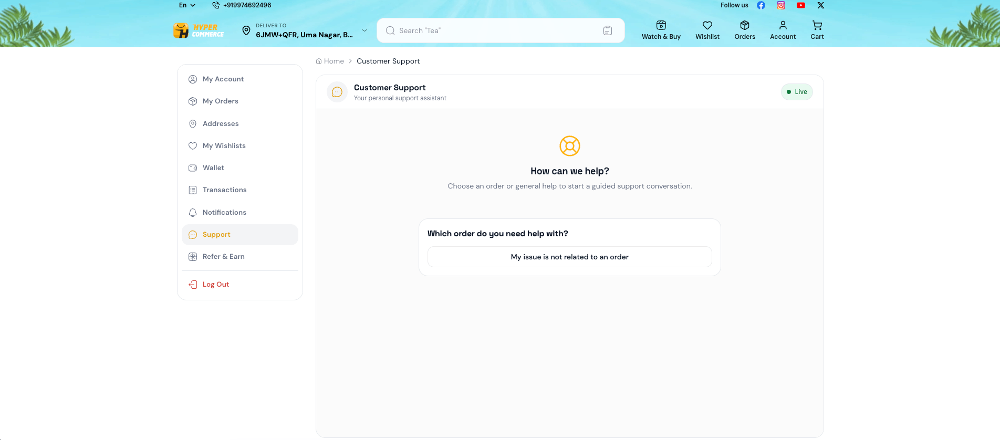
Realtime, polling and notifications
| Indicator | Meaning | What happens |
|---|---|---|
| Live | The authenticated private thread subscription succeeded. | Events update the open conversation and Admin inbox immediately. |
| Polling | The socket is not subscribed but the REST API and network are available. | Delta endpoints run every 15 seconds without overlapping requests. IDs prevent duplicate messages. |
| Offline | Neither WebSocket nor API delivery is currently available. | Reconnect/focus/network-return triggers another catch-up attempt. |
The Admin warning is based on repeated private-channel health failures, not only whether settings fields are filled. When the Admin is outside Customer Support, a new customer message produces an in-panel toast and, if the browser has permission and the tab is hidden, a browser notification. Customer Web behaves the same for agent messages while the customer is outside the support page. No duplicate notification is shown while the recipient is already inside the chat.
Private authorization protects four channel purposes: the conversation thread, thread presence, the customer's personal notification stream, and the permission-protected Admin inbox. Customers can authorize only their own thread; Admin users need support.view.
Verification checklist
Troubleshooting
| Symptom | Check |
|---|---|
| Settings saved, but chat stays Polling | Run the connection test. Verify public host/port/scheme, TLS, proxy Upgrade headers, process-manager status, and that both site hostnames are in Allowed Origins. |
| Private-channel request returns 401/403 | Sign in again. Confirm the customer token or Admin session is valid and the Admin role has support.view. A customer cannot subscribe to another customer's thread. |
| Pusher connects but typing is missing | Enable Client Events in the Pusher Channels app, then retest in two separate accounts. Also verify the active ticket is assigned to the typing Admin agent. |
| Reverb worked before settings changed | Run php artisan reverb:restart and confirm Supervisor restarted it with the saved database configuration. |
| Browser reports mixed content | Use HTTPS/WSS on production pages. For a plain local HTTP site, use HTTP/WS. |
| Messages save but are not live | The REST write is authoritative, so data is safe. Inspect Reverb/Supervisor or Pusher logs; polling should deliver the saved message while the socket recovers. |
| No browser notification | Notifications appear only outside the support page. Grant site notification permission; some browsers require a user interaction before permission or audio can be enabled. |
| Agent composer is read-only | Assign the active session to that agent. A different assignee must reassign it first. |
For Reverb process limits, advanced event-loop extensions, reverse proxy details, and horizontal scaling, use Laravel's official Reverb documentation. Hypercommerce's Admin settings remain the source of truth for the selected driver and ordinary credentials.